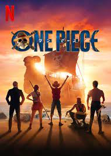
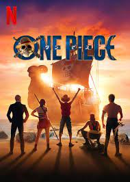

Favoriete muziek artiest: avicii en Alan Walker,https://www.youtube.com/@Alanwalkermusic


Mijn lievelingseten is Spaghetti bolognaise. https://www.boodschappen.nl/recept/pasta/spaghetti/

Koekeloerhierstraat, 49, Zotrijk, 9999
0420 XXX XXX XXX
Bobby.Hartte@gmail.com

Hobby 1: 1 van mijn grootste hobbies is namelijk Voetbal, het spelen maar ook kijken naar voetbal, https://sporza.be/nl/categorie/voetbal/
Hobby 2: Gamen, Ik game graag (videogames) en doet dat ook heel veel in mijn vrije tijd nadat ik lessen herhaald heb https://www.playstation.com/en-hk/
Hobby 3: Wandelen, Ik wandel graag als hobby met muziek op de achtergrond genieten van de natuur. https://nl-be.mappy.com/itineraire/pieton
Favoriete muziek artiest: avicii en Alan Walker,https://www.youtube.com/@Alanwalkermusic

Mijn lievelingseten is Spaghetti bolognaise. https://www.boodschappen.nl/recept/pasta/spaghetti/